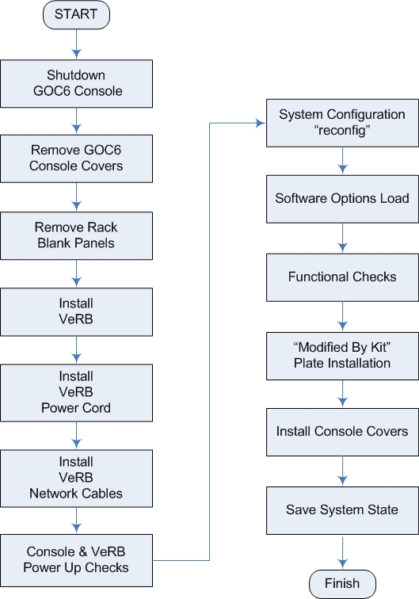
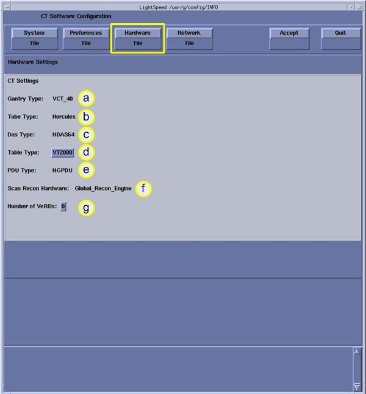
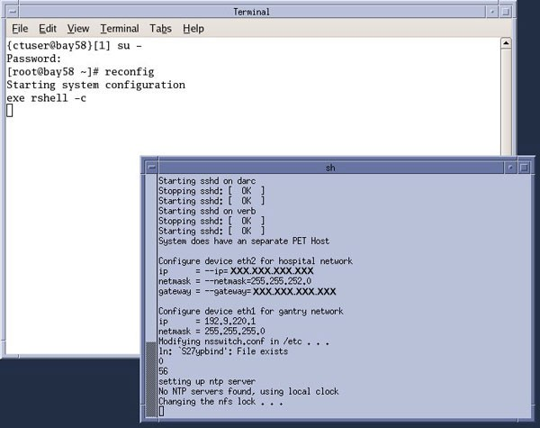

Operating Documentation
Direction 5193574-800, Rev# 22
LightSpeed 7.X Service Methods
Module Version 3.0, Version Date 11/8/10
Operating Documentation |
| Required Persons | Preliminary Reqs | Procedure | Finalization |
|---|---|---|---|
| 1 | Not Applicable | 120 mins | 40 mins |
This procedure describes and illustrates the steps necessary to upgrade a GOC6 or GOC6.5 (GOC6 Series) Operator Console with a VeRB Recon Computer using Upgrade Kits 5321434 (for GOC6 Consoles or 5321434-2 (for GOC6.5 Consoles).
| Last Revised: | 6 October 2009 |
The flowchart in Illustration 1 presents the basic upgrade process.
Illustration 1: VeRB Upgrade - GOC6 Series Console Flowchart

| NOTE: | Please review Section 3.5, Required Conditions, before proceeding with this upgrade procedure. |
| Item | Qty | Effectivity | Part# | Manufacturer | |
|---|---|---|---|---|---|
| Torque Wrench | 1 | - | - | - | |
| Standard FE Toolkit | 1 | - | - | - | |
| Item | Qty | Effectivity | Part# | Manufacturer |
|---|---|---|---|---|
| Tie Wraps | 10 | - | 46-208758P3 | - |
| Item | Qty | Effectivity | Part# | Manufacturer | |
|---|---|---|---|---|---|
| VeRB or VeRB2 Computer | 1 | - | VeRB: 5255299-30 for GOC6 or VeRB2: 5255299-31 for GOC6.5 | Radisys | |
| Cable, Ethernet CAT5e (1.5 Meter) | 2 | - | 5313765 | - | |
| Cable, Power IEC (2.0 Meter) | 1 | - | 5314704 | - | |
| Modified By Kit Plates (with Serial #, Model #, Description, and Manufactured Date on a 2.25 X 1.79 Plate) | 1 | - | 5335238 | - | |
| Cable labels | 1 | - | 5316747-3 | - | |
| VeRB Upgrade to GOC6 Console Direction Pointer Document | 1 | - | 5335558-1EN | - | |
| ||||
| ELECTROCUTION HAZARD | ||||
| HIGH VOLTAGE PRESENT. | ||||
| USE PROPER LOCKOUT / TAGOUT PROCEDURES BEFORE REPLACING THE COMPONENTS. |
| ||||
| FINGER PINCH AND SHARP EDGES HAZARD | ||||
| DUE TO TIGHT CLEARENCES OF RACK MOUNTED COMPUTERS AND SHARP EDGES OF CHASSIS COMPONENTS, FINGER AND HAND INJURIES CAN OCCUR. | ||||
| Wear HAND PROTECTION GLOVES AND PAY ATTENTION to HAND AND FINGER LOcaTIONs AT ALL TIMES. |
| ||||
| POTENTIAL FOR INJURY TO SERVICE PERSONNEL. | ||||
| VERB COMPUTER CHASSIS CAN WEIGH IN EXCESS OF 40 POUNDS. | ||||
| DEPENDING ON YOUR HEIGHT AND ACCESS TO EQUIPMENT REMOVAL/INSTALLATION, LIFTING ASSISTANCE MAY BE REQUIRED. USE YOUR JUDGMENT TO DETERMINE IF LIFT ASSIST OR A SECOND PERSON MAY BE REQUIRED TO ASSIST IN REMOVAL AND INSTALLATION. |
| ||||
| TO PREVENT DAMAGE TO COMPONENTS WITHIN THE GOC6 SERIES CONSOLE,
OBSERVE THE FOLLOWING ESD PRECAUTIONS:· WEAR A STATIC STRAP
TO ENSURE THAT ANY ACCUMULATED ELECTROSTATIC CHARGE IS DISCHARGED
FROM YOUR BODY TO GROUND.· CREATE A COMMON GROUND FOR THE
EQUIPMENT YOU ARE WORKING ON BY CONNECTING THE STATIC-FREE MAT, STATIC
STRAP AND PERIPHERAL UNITS TO THAT PIECE OF EQUIPMENT. FOR FURTHER INFORMATION REGARDING ESD PROTECTION, REFER TO THE SAFETY CHAPTER IN THIS PUBLICATION | ||||
| ||||
| FOLLOW ALL REQUIRED SAFETY AND PPE PROCEDURES CUSTOMARY FOR YOUR ORGANIZATION WHEN WORKING ON THIS PRODUCT. | ||||
| Condition | Reference | Effectivity |
|---|---|---|
This upgrade applies only to GOC6 Series Operator Console. | - | - |
The GOC6 Series Operator Console must be running 09MW08.10/11 or later software. | - | - |
Make certain a current System State has been saved. Though not needed to perform this upgrade, it is good practice to have a current System State ready in the event of unforeseen failures that would require a LFC. | - | - |
Only trained service personnel should service the GE CT Scanner. | - | - |
Though not necessary for performing a VeRB Upgrade, most likely new Option Licenses have been included with the VeRB Upgrade order. Check to make sure that any new Option Licenses have been included with the upgrade. | - | - |
Before starting upgrade and console disassembly, check contents of upgrade kit to ensure that all supplied parts (see Section 3.3, Replacement Parts) are present and have not been damaged in shipping. | - | - |
Select one of the following methods to power off the Operator Console:
If Applications are running, click on the [Shut Down] icon and select [Shutdown].
If Applications are down, open a Unix Shell using the Toolchest. Type:
{ctuser@hostname} halt[ENTER]
The Operator Console monitor will display a System Halted message when it is acceptable to power off the Operator Console.
Power OFF the Operator Console at the front panel switch (Illustration 2).
Illustration 2: Console Power Switch

Perform Lockout / Tagout as described in Safety - Equipment Service - Lockout / Tagout / PPE in the LightSpeed VCT Service Manual. For added protection, disconnect the Twist-N-Lock Main Power Cable from rear of console.
Move the console away from the wall to allow clear access around the console.
Remove console’s front and rear covers and set aside.
| NOTE: | Refer to Replacement > Console GOC6 > Console Cover Removal and Installation in the Lightspeed VCT Service Manual for more details. |
Remove the console’s Keyboard Tabletop and set aside. This will allow better access to the console’s computer rack.
At the front of the Console, remove the Rack Blank Panel (item A in Illustration 3) immediately above the DIG Computer.
Illustration 3: Console Rack Blank Panel Location

| A | Rack Blank Panel |
| NOTE: | Save the four (4) 5mm socket cap bolts and washers. |
The Rack Blank Panel is no longer needed. Dispose of it properly.
Remove the VeRB Computer (5255299-30 FOR GOC6 OR 5255299-31 for GOC6.5) from the shipping container and check that all packaging material has been removed and is not blocking intake fans or ventilation grills on the chassis.
Lift and slide the VeRB Computer in the front of the console, sliding the VeRB Computer on the two rack guides already installed in the console rack. Push the VeRB Computer fully into the console rack until it is flush with the front of the console rack.
| NOTE: | If necessary, utilize the recommending lifting tools described in Safety - Equipment Service - Console in the Lightspeed VCT Service Manual. |
Mount the VeRB Computer to the console rack utilizing the four (4) 5mm socket cap bolts and washers removed earlier. Torque to 4.6 N-m.
At the rear of the console, plug the VeRB Computer Power Cable (5314704) into the VeRB Computer (item C in Illustration 4).
Label this end of the power cord “VeRB” using the supplied Cable Labels (5316747-3).
Check, and if necessary, turn on the VeRB Computer Power Switch (item D in Illustration 4).
Illustration 4: VeRB Power and Network Connections

| Item | Destination | |
| A | VeRB Network Port: | CNS Eth 6 (Port 6) |
| B | VeRB RMM Network Port | CNS Eth 5 (Port 5) |
| C | VeRB Power Receptacle | - - - |
| D | VeRB Power Switch | - - - |
Run the power cable along the cable tray (item A in Illustration 5), directly above the VeRB Computer, to the right side.
Illustration 5: VeRB Power and Network Cable Routing

| A | Computer Power Cable Tray |
| B | Network Cable Tray |
Label the other end of the VeRB power cord “VeRB J13” using the supplied Cable Labels. Insert this end of the VeRB Computer Power Cable into the console cabinet, along the right side top of the rack, to the Power Distribution Box. (See Illustration 5.)
Plug this end of the VeRB Power Cord into J13 on the Power Distribution Box (Illustration 6).
Illustration 6: J13 - VeRB Power Cable Location on Power Distribution Box

At the rear of the console, plug the VeRB Computer Network Cable (5313765) into the VeRB network port (item A in Illustration 4). Label this end of the network Cable “VeRB Eth 6” using the supplied Cable Labels (5316747-3).
At the rear of the console, plug the VeRB Computer RMM Network Cable (5313765) into the VeRB RMM network port (item B in Illustration 4). Label this end of the network Cable “VeRB RMM Eth 5” using the supplied Cable Labels.
Run the Network Cables along the cable tray (item B in Illustration 5), directly below the VeRB Computer, to the right side.
Label the other end of the VeRB Computer Network Cable “Eth 6 VeRB” using the supplied Cable Labels. Insert this end of the VeRB Computer Network Cable into the console cabinet, along right side bottom of the rack, to the Console Network Switch (CNS). (See Illustration 5.)
Label the other end of the VeRB RMM Network Cable “Eth 5 VeRB RMM” using the supplied Cable Labels. Insert this end of the VeRB Computer Network Cable into the console cabinet, along right side bottom of the rack, to the CNS. (See Illustration 5.)
Connect the VeRB Network Cables into their respective ports on the CNS. (See Illustration 7.)
Illustration 7: VeRB Network Cable Connections on Console Network Switch

Using several tie wraps, secure the VeRB Power and Network Cables to the cable trays along which the cables have been routed. (See Illustration 5.)
Reconnect the Twist-N-Lock Main Power Cable at rear of console and remove the Lockout / Tagout protection applied earlier.
Power on the Operator Console at the console’s front panel switch.
Do not allow Applications to start. During boot-up, cancel Application Startup when the CT Software Auto-start pop-up window appears.
Verify that the VeRB Computer has powered up and is not displaying or sounding any POST Errors.
| NOTE: | See Troubleshooting - Console (GOC6) - VeRB Troubleshooting in the Lightspeed VCT Service Manual for more details. |
In order to ensure proper operation of the VeRB computer, it is necessary to perform the following System Configuration process.
Open a Terminal window and log on as Root.
Type: {ctuser@hostname} su - [ENTER]
Type the root password and press [ENTER]
Launch the Configuration utility:
Type: [root@hostname] reconfig[ENTER]
The System Configuration Utility launches and the CT Software Install Utility Window appears.
Illustration 8: System Configuration Utility

Click [CONFIG] in the CT Software Install Utility Window (Illustration 8).
Click [HARDWARE]. The Hardware Settings Screen displays.
Illustration 9: Hardware Settings Screen

On the Hardware Settings Screen (Illustration 9), change the number of VeRBs (item G) to 1 by clicking on the number.
Click [ACCEPT] to accept the changes made. The System Configuration Utility will now reconfigure the system to include the VeRB Computer. While the configuration is progressing, the results are displayed in a Shell window (Illustration 10) that closes when the loading process is complete.
Illustration 10: Configuration Shell Window

When the configuration changes are complete, the system displays a prompt to reboot (Illustration 11). Click [YES].
Illustration 11: Configuration Complete Window

After Rebooting, the system will automatically log in as ctuser.
If the Autostart Disabled popup message appears, select [OK] and open a Terminal Window.
Type: {ctuser@hostname} st[ENTER]
| NOTE: | To remove/uninstall a VeRB Computer from the GOC6 Series Console, repeat the process of System Configuration (“reconfig”) and simply change the “Number of VeRB” computers back to “0.” The System Configuration (“reconfig”) script effectively removes the VeRB from the system. |
Load new Option Licenses as necessary. Note the following:
The procedure for loading option licenses in located in Software GOC6 > Install Software Options in the Lightspeed VCT Service Manual.
Though not necessary for performing a VeRB Upgrade, most likely new Option Licenses have been included with the VeRB Upgrade order. Check to make sure all new Option Licenses have been loaded.
Attach the VeRB Upgrade “Modified By Kit” plates (5335238) (Illustration 12) alongside the present Rating Plates (locations A and B in Illustration 13).
Illustration 12: Modified By Kit Plate

Illustration 13: Modified By Kit Plate Locations

| A | Back side of Console, near Rear Bulkhead Panel |
| B | Inside Console, near Power Distribution Box |
Reinstall Console Front and Rear Covers.
| NOTE: | Refer to Replacement > Console GOC6 > Console Cover Removal and Installation in the LightSpeed VCT Service Manual for more details. |
Reinstall Console Keyboard Tabletop.
Save a new System State in accordance with Software GOC6 > Software Installation > System State Save Restore in the LightSpeed VCT Service manual.
Refer to System Scanning Tests > Functional Checksin the LightSpeed VCT Service Manual to confirm proper operation.